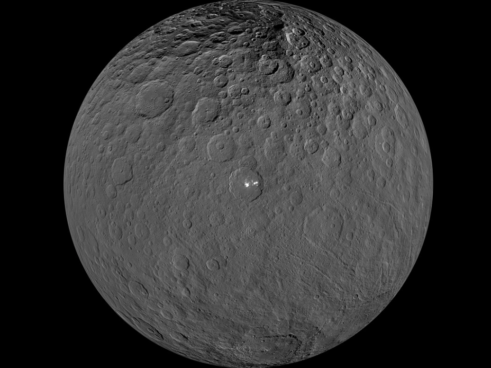

Solar System is not only of Planets and Sun, but far more than that in this page we will see about dwarf planets, planets which orbits directly around Sun and not any planet is one of the description of dwarf planet SCROLL DOWN to know more.
A dwarf planet is a celestial body that -orbits the sun, has enough mass to assume a nearly round shape, has not cleared the neighborhood around its orbit and is not a moon.
Some dwarf planets:
Pluto
Pluto which is smaller than Earth’s Moon has a heart-shaped glacier that’s the size of Texas and Oklahoma. This fascinating world has blue skies, spinning moons, mountains as high as the Rockies, and it snows – but the snow is red.
Ceres
Dwarf planet Ceres is the largest object in the asteroid belt between Mars and Jupiter, and it's the only dwarf planet located in the inner solar system. It was the first member of the asteroid belt to be discovered when Giuseppe Piazzi spotted it in 1801.

Makemake
Along with fellow dwarf planets Pluto, Eris, and Haumea, Makemake is located in the Kuiper Belt, a donut-shaped region of icy bodies beyond the orbit of Neptune. Slightly smaller than Pluto, Makemake is the second-brightest object in the Kuiper Belt as seen from Earth (while Pluto is the brightest). It takes about 305 Earth years for this dwarf planet to make one trip around the Sun.
Haumea
Haumea is roughly the same size as Pluto. It is one of the fastest rotating large objects in our solar system. The fast spin distorts Haumea's shape, making this dwarf planet look like a football. Everything we know about Haumea is from observations with ground-based telescopes from around the world.
Eris
Eris is one of the largest known dwarf planets in our solar system. It's about the same size as Pluto but is three times farther from the Sun. Originally designated 2003 UB313 – and nicknamed for the television warrior Xena by its discovery team – Eris is named for the ancient Greek goddess of discord and strife. The name fits since Eris remains at the center of a scientific debate about the definition of a planet.